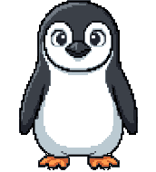

Identidade visual
Um mascote, um azul, um grafite; cada irmão com o seu objeto e a sua cor. O Linu, o azul e o grafite são de todos.

Cores
Toque numa cor para copiar o código.
Letras
Aa Bb Cc 123
Cada irmão tem as suas, no máximo duas, todas de licença livre e servidas pelo próprio site (sem Google Fonts):
- LinuPedia: Kalam nos títulos (a letra à mão do caderno) e Atkinson Hyperlegible Next no texto (feita para baixa visão).
- Linu Sites: Nunito no texto (redonda como o Linu) e Courier Prime nas etiquetas e fichas (a máquina de escrever da estação).
- Digital Linu: Archivo, estreita e pesada nos títulos como crédito de cinema, larga no texto; JetBrains Mono no timecode.
- Linu Seguro: Chakra Petch nos títulos (os cantos cortados como o chanfro dos blocos) e Red Hat Text no texto.
- Família Linu: Pixelify Sans nos títulos e nas placas do mapa, Nunito no texto.
Cada um com o seu objeto
- LinuPediaO caderno de expedição: papel, letra à mão, fita e carimbos de cada lugar.linupedia.com.br
- Linu SitesA estação por dentro: a cena em pixel art, as fichas com clipe, o quadro de cortiça, a prancheta e o rádio; o lampião que o Linu apaga à noite.sites.linupedia.com.br
- Digital LinuA ilha de edição: o Linu com a câmera no visor, a régua de timecode e os serviços como clipes nas trilhas.digital.linupedia.com.br
- Linu SeguroO iglu de blocos: a página toda em blocos de gelo, e o Raio-X assenta cada bloco da cúpula.seguro.linupedia.com.br
- Família Linu você está aquiO mapa das ilhas: uma ilha para cada irmão, ligadas por pontes.familia.linupedia.com.br
O que nunca entra
- Emoji no lugar de ícone: os ícones são desenhados para cada site.
- Rótulos em maiúsculas espaçadas.
- Gradiente roxo, brilho colorido, foto de banco de imagens.
- Fontes da “lista de IA”, como Inter e Poppins.
- Frases que servem para qualquer um: “transforme”, “eleve”, “simples, rápido e seguro”.